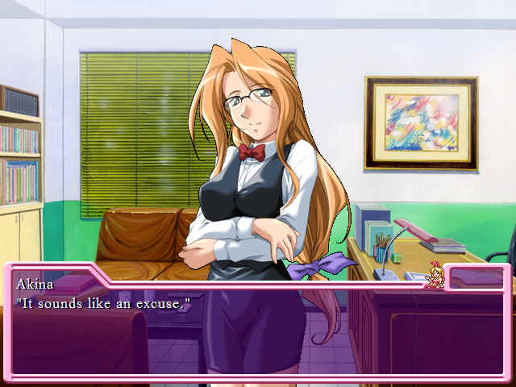
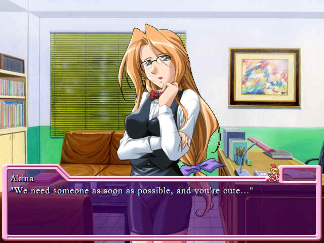

Which, if I don't say so myself, is a damn cool name for a restaurant. 'I had lunch the other day at that restaurant.' 'oh which-' 'MOTHERFUCKING PLATINUM BABY.'
It's close to my house, the work doesn't sound too tough, and they'll pay me good...It's a perfect place to work! I'm going for an interview now.
A scene shift later...
"Hah...hah...I thought the restaurant was close to my house...but I can't find it."
I'm lost. I'm sure I'm close. I thought it was going to take only 15 minutes or so to get there, but I've been walking for more than half an hour. I've been wandering around this area for a long time...I may look like a pervert.
This is why we find out where the hell things are before we apply to work for them.
"Usually, restaurants have big signs..." I don't often go out to eat at restaurants, so I don't know what to look for...Hah...Is it a small restaurant?̶. No - they are offering too much money for just a small restaurant.
That's right. You only make REAL money at big chains, like Olive Garden.
The info I got from the flier mentioned that it's an Italian restaurant, and they need someone to help, and how much they'll pay. It might be an underground restaurant where they always have to keep bouncers..."
Yeah, apply good luck applying for THAT job, girlboy.
Well, I don't think so..."Oh...I'll be late..." I'm glad I left early. But I might be late, even though I left early...If I'm late for the interview, I'm sure I won't get the job. I won't be able to find such a good offer somewhere else!
I'd better try to find the restaurant...ah..."
JESUS. YOU'RE LATE. WE GET IT. Instead of talking about, why don't you, you know, look around some more?"

 : "What was I looking for..."
: "What was I looking for..."I droop my shoulders...I don't have time to be like this. I look at my watch. I have five minutes before the interview.
"Good...I made it." "You made what?" "Wah...!?"
"You made what?" "Wah...!?"Someone suddenly talks to me.

It's Squall!
"I came here for a job interview..." "Oh, it's you...Akina, the manager, told me about you. Come on in." "Eh...oh...thank you..."
"Oh, it's you...Akina, the manager, told me about you. Come on in." "Eh...oh...thank you..."The guy leads me into the restaurant. I'm so nervous, my voice screeches.

Welcome to Platinum. We'll be doing some fucking here.
As he slowly walks in front of me, he hums. Does he work here? He's tall and masculine...He must be popular with girls. I wish I were like him.
You're getting less and less masculine and we've just barely met you, Yuk.

And here's the office. Fucking is to be had here, too.
: "Here you go...Well, she's not here...What the hell is she doing?"He scratches his head and sulkily smiles at me. I haven't heard his name yet.
"I'll bring the manager. Have a seat." "Ah...yes. Thank you very much."
My voice screeches again.
"Ha-ha-ha. Don't be nervous. I won't bother you. I have a family." "Ha...huh?"
He won't bother me...? Does he...
 "Shuntaro? What are you doing here?" "Oh, Akina...I mean Boss. I brought her here. She came here for the interview."
"Shuntaro? What are you doing here?" "Oh, Akina...I mean Boss. I brought her here. She came here for the interview."Double iceburn, Yukari. Sucks to be you.
He turns around and smiles at me.

Neat.
The lady looks at him, as if he were her little brother. I don't know how to react.
"Oh...?"She finally notices me.
"Are you the one who called...?" "Yes! I'm Yukari Fujisawa. Nice to meet you!" "............" "...um?"She must be the one I talked to on the phone the other day. She suspiciously looks at me.
"Let's start the interview, Mr. Fujisawa." "Alright!" "Eh...? Mr...? Akina...!?"Yes, he IS a dude, dickweasal.
"Go out and clean up, please."She's gently smiling, but she has a tone of authority in her voice. She's a so-called career woman.
That line kills me. "So-called career woman." Kind of like saying, "she thinks she's a business manager but in reality she's just there cause she's pretty. We all know women can't run businesses."
She pushes him out of the room.
: I'll kill you if you peep in here."Uh-...
She throws him an icy look. I thought she was kind...
: Please have a seat over there."KNOCK, KNOCK, KNOCK! He's knocking on the door during an interview. What an asshole.
: "Hah..."KNOCK, KNOCK!
: "Is he OK?" I point at the door. "Leave him alone. I'll introduce him to you later."He stops knocking after a while, and she comes to me shrugging.
"We finally can sit down and talk...Nice to meet you. I'm Akina Inamura, the manager at Platinum.""I'm happy to meat you too, Akina."
"....................": "Are you OK?"He's terrified in the presence of women, can't you tell?
"Ah...yes...I'm OK...Nice to meet you, too. I'm Yukari Fujisawa." "He-he...": She knows what I'm thinking...I blush.This is it! Sex time!
: Wow...how cute. I can't blame Shuntaro for mistaking you for a girl."...from erect to flacid in five seconds flat.
"Ah...he did? That's what I thought." I was so nervous, I
sounded like a girl...Now I understand why he treated me like that. "He-he...He used to be a famous playboy. After he got married, he lost his insight into girls. Ha-ha-ha!" "Hah..."Ms. Inamura laughs hard.
"Actually, I thought you were a girl until we met. I'm sorry...I thought you were a girl from your name and your voice." "People do that all the time...:emo:"I'm used to being mistaken for a girl, but I've never met someone as honest as her. Come to think of it, her attitude is strong and favorable. I almost forgot why I'm here.
"Ah...by the way, are you only looking for girls?" "Actually, yes."She nods her head. She gives me a definite answer. I droop my shoulders. There's no way I can get this job because I'm a boy.
DENIED BY THE DONG. Jesus, man, you just can't catch a break, can you?"
"We only have waitresses here. Only girls can do the job. But two girls suddenly quit. We need someone as soon as possible." "I see..." Only girls can do the job...?:pervert:
"Um..." "Yes...?" Ms. Inamura looks into my face. And...
"Eh?" "It's good for our restaurant to have a unisexual appeal. We have female customers too." "Huh? What?""You lost me after '...sexual...'."
: "You're hired!" She cheerfully declares.woop.gif
Next time: Job Benefits.